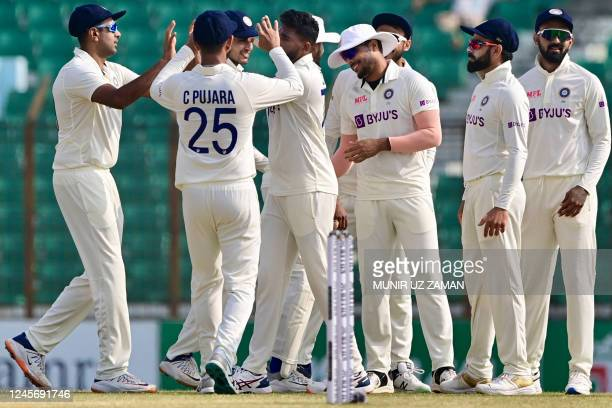

A victory by a gargantuan margin of 546 runs. Before this, Bangladesh’s previous highest victory in Tests was by 226 runs. Now, the margin of victory has more than doubled and reached 546! Such a victory is certain to evoke joy and likely to arouse a feeling of disbelief among the Bangladesh cricketers. However, there’s no way of asking someone else about what a victory of such massive proportion feels like. How would there be, there is no one alive on planet earth other than the 11 Bangladesh cricketers who know this feeling! Does that mean that other than Bangladesh, no team has ever won a Test by 500 runs or more? They have, but none of the players of those teams are alive any more. The last time Test cricket witnessed a match like this was 89 years ago. In that Oval Test in 1934, Don Bradman’s Australia defeated England by 562 runs. The last living member of Bradman’s ‘The Invincibles’ Australian team, Bill Brown, breathed his last 15 years ago at the age of 96.England team has taken ultra-aggressive style of “Bazball’ to throw away all the cautions to score runs in ultra rapid manner.
